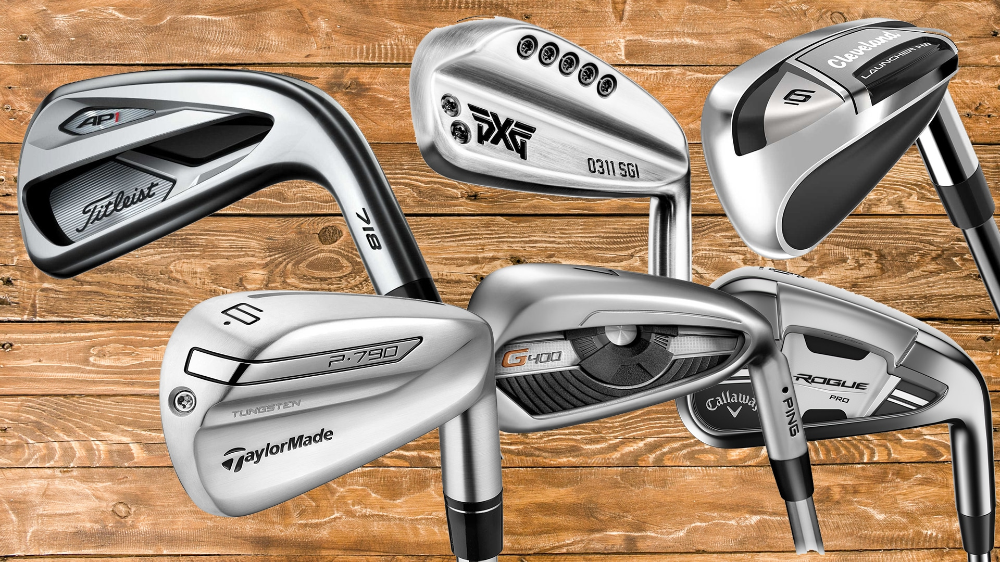
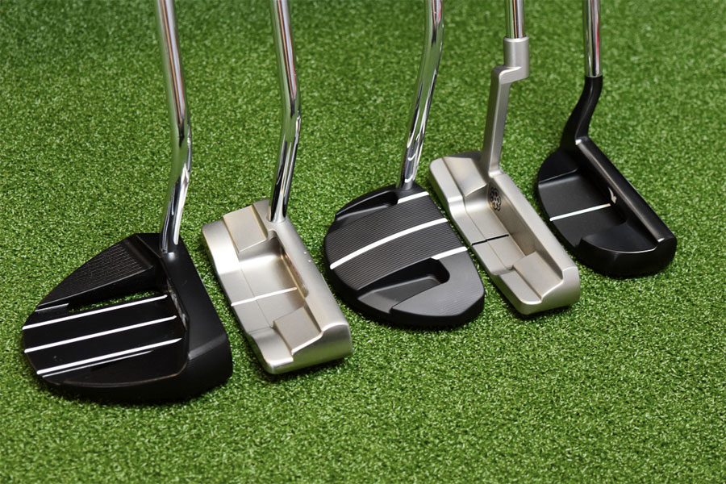

Driver
Drivers are used when hitting the ball long distances. They are designed with a large head in order to maximize distance. The distance comes with the cost of accuracy control. A driver is heavier than most other clubs allowing the swing to be faster. Non-professional golfers hit the driver anywhere from 200 - 300 yards while professionals can hit excess of 300 yards.
Irons
Irons are used for medium to close range shots. Typically in a set of golf clubs, there are anywhere from 4 - 10 different kinds of irons, each one with a different amount of loft affecting the distance the ball will travel. Irons have a smaller club head making it easier to hit the ball out of unideal hitting conditions as compared to a driver.
Putter
Putters are used once the ball has reached the green. Putters may have different shaped head, but none really offer a distinct advantage over another. Which putter is in a bag is typically based on how it feels when striking the ball.